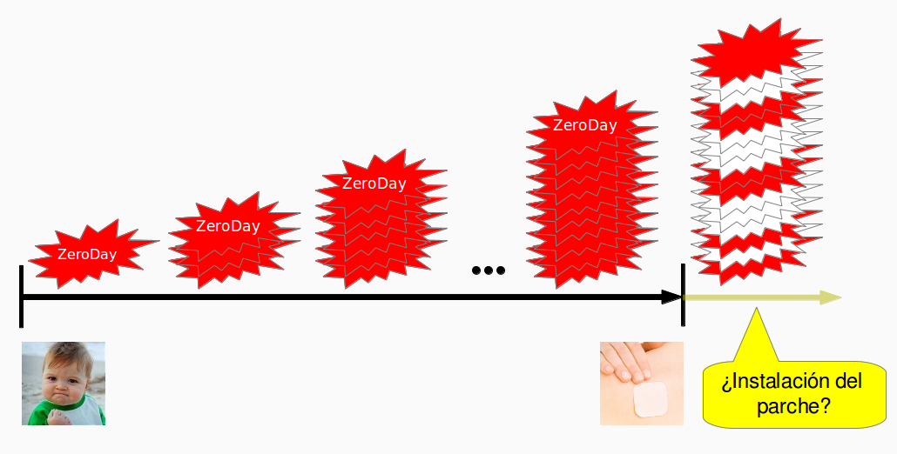
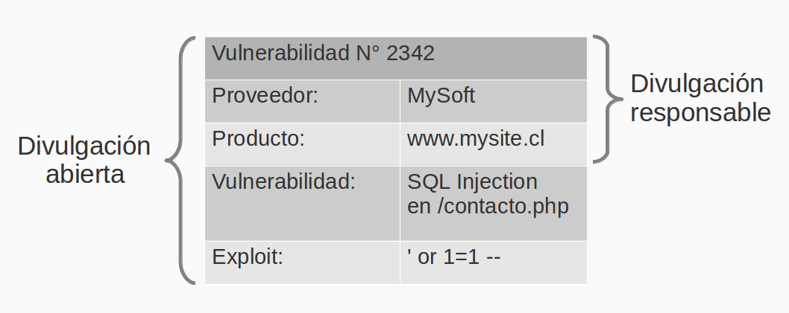

Disclosure no es llegar y hacerlo
El siguiente post es de un notable “villano invitado”, se trata del experto en seguridad, y gurú en cervezas ;-), Cristián Rojas.
Esta nota nace de una conversación con Cristián en El Test Acido, la que dado el formato del programa no pudimos profundizar, por eso le pedí a Cristian que elaborara el tema en un artículo que ahora comparto con ustedes.
Disclosure: No es llegar y hacerlo
Por Cristián Rojas
Recientemente fui testigo (¿victima?) de la divulgación de una vulnerabilidad en un conjunto de servidores UNIX distribuidos con NIS en el cual tengo una cuenta de usuario. La vulnerabilidad consiste en que mediante un comando cualquier usuario podría obtener la lista de todos los usuarios del conjunto de servidores NIS con sus respectivos verificadores de passwords. Muy a pesar que las passwords están convertidas en verificadores utilizando crypt, como ocurre en todo sistema basado en UNIX, podría ocurrir que una clave muy fácil (o basada en una palabra de diccionario) fuera descifrada utilizando herramientas como John The Ripper.
Sin embargo, el problema no está en la vulnerabilidad, sino en quién la divulgó. El denunciante es otro usuario del sistema, quien mencionó que no es primera vez que reporta la vulnerabilidad a través del foro. Contacté en forma privada a los administradores del sistema y les indiqué acerca del problema, el cual corrigieron al día siguiente, y además les pregunté si habían recibido alguna comunicación en forma privada por parte del denunciante, ante lo cual me respondieron que no.
Es muy probable que al divulgar la vulnerabilidad en el foro, el denunciante debe haber sentido que hizo un bien a la comunidad de usuarios del sistema. El problema es que al hacerlo, expuso innecesariamente a los usuarios afectados a que sus cuentas fueran vulneradas, o peor aún, que otros servicios que usen éstos fueran vulnerados también. ¿Malicia por parte del denunciante? Muy lejos de serlo. Ignorancia quizás.
Modelos de (no) divulgación
Existen hoy en día 3 modelos de divulgación que puede seguir un usuario al encontrarse con una vulnerabilidad de seguridad en un sistema computacional, en una red o en un software.
El primer modelo es el de No Divulgación, en el cual quien encuentra una vulnerabilidad simplemente se queda callado. Este modelo es interesante porque, si quien encuentra la vulnerabilidad es inescrupuloso, podría explotar la vulnerabilidad él sólo y profitar con ello. Nadie más se entera, ni el proveedor (con esta palabra me refiero al Webmaster, Sysadmin, o desarrollador en caso de un software), ni otros usuarios. El problema es que la vulnerabilidad seguirá existiendo, y la información seguirá siendo expuesta o modificada ilícitamente, esto es, hasta que alguien más se tropiece con la vulnerabilidad y la revele, momento en el cual puede ocurrir uno de los otros dos modelos.
El segundo modelo es el de Divulgación Abierta, también conocido por algunos como Divulgación Irresponsable, que consiste en que el usuario, al encontrar una vulnerabilidad, la hace pública en su blog, foros, etc., y publica todos los detalles al respecto: En qué aplicación/sistema está, qué vulnerabilidad es y cómo explotarla. Al hacer esto, permite que, por ejemplo, los investigadores en seguridad se pongan a elaborar firmas nuevas para antivirus, los administradores de sistemas se pongan en alerta y tomen medidas pseudo-mitigatorias (workarounds), y los usuarios finales queden muy asustados. No sólo eso, sino que mete presión a los proveedores para parchar sus sistemas o software.
Hay 2 problemas con este tipo de divulgación. El primero de ellos consiste en que al tener una vulnerabilidad no parchada y de la cual todo el mundo está enterado, ocurre lo que se conoce como ataques Zero Day, que son ataques contra sistemas los cuales no han sido parchados contra esa vulnerabilidad, por lo tanto están completamente expuestos, y lo seguirán estando hasta que salga un parche. Y de ahí surge el segundo problema: El proveedor deberá apurar un parche y preocuparse de dos cosas: Que el parche mitigue la vulnerabilidad y que no cause una regresión. Además, el proveedor no podrá dormir 100% tranquilo, ya que una cosa es lanzar el parche y otra muy distinta es que la gente lo instale.

Un ejemplo claro de esto es el siguiente: Si Usted es un usuario de Windows, ¿se ha preguntado alguna vez qué es esta Herramienta de eliminación de software malintencionado de Windows que llega a través de Windows Update, y por qué llega cada mes? No es un antivirus. Es una herramienta que permite el parchado automático de sistemas Windows contra gusanos como el Nimda o el SQL Slammer, que fueron lanzados hace ya casi 10 años, sin embargo aún causan estragos porque muchos sistemas Windows en el mundo están desatendidos, y estos gusanos se siguen autoreplicando a través de la red desde y hacia estos sistemas vulnerables.
¿Eso significa que estamos todos expuestos a vulnerabilidades, Zero Days y gente que las divulga en forma abierta?
No necesariamente. Existe un modelo poco conocido (o poco utilizado) conocido como Divulgación Responsable, el cual consiste en que el denunciante contacta en forma privada al proveedor y le revela sólo a él los detalles de la vulnerabilidad, mientras indica públicamente que la aplicación tiene una vulnerabilidad.
El diablo está en los detalles
En ambos casos el denunciante publica la vulnerabilidad. ¿Dónde está la diferencia? En los detalles que éste hace públicos al descubrir la vulnerabilidad. En el caso de la divulgación abierta todos los detalles son divulgados inmediatamente, mientras que en la divulgación responsable el denunciante sólo se limita a decir “este sistema tiene una vulnerabilidad”, sin mencionar mayores detalles. De hecho, lo de “responsable” se configura como una responsabilidad tanto para con el proveedor, como para con los usuarios de la aplicación, ya que el denunciante acuerda un plazo razonable con el proveedor para que éste corrija la vulnerabilidad, tiempo después del cual el denunciante hará públicos todos los detalles de ésta.

Lo que se recomienda es usar divulgación responsable. Incluso hay organizaciones que ofrecen dinero como motivación para reportar vulnerabilidades usando este modelo. Sin embargo, no todo el mundo tiene esta posibilidad financiera. Pero ahora tenemos claro cuáles son los modelos de divulgación y sabemos cómo divulgar bien (y mal) las vulnerabilidades de seguridad de los sistemas que usamos.
Sobre el Autor:
Cristián Rojas es Ingeniero Civil en Computación de la Universidad de Chile. Actualmente se desempeña como especialista en monitoreo de sistemas para Firenxis, y como consultor freelance en desarrollo de software seguro y de politicas empresariales de seguridad de la información.
También se desempeña en el campo de la docencia, participando como profesor del módulo de Seguridad de Software en el Diploma de Postítulo en Seguridad Computacional de la Facultad de Ciencias Físicas y Matemáticas de la Universidad de Chile, y además como profesor de pregrado en el curso CC5315: Seguridad de Software de la misma facultad.